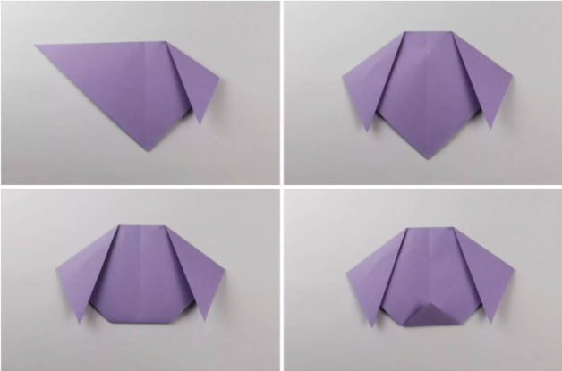

BY CLICKING ON "MY GIT HUB PAGE" YOU CAN GET AMAZING PROJECTS MADE BY ME
Start white side up. Place the paper in a diamond position.
Fold the top corner down to the bottom.
Fold the right corner over to the left.
Unfold one side.

Fold one corner down, leaving a small gap at the top of the middle crease.
Fold the other side down to match.
You can now fold the bottom corner up and behind.
You can finish here for the simplest origami dog face.
To make either the puppy's tongue or lower jaw, fold one
layer of the bottom up and continue to the next step.
Fold the flap back down again to meet the bottom of the head.
Flip the model over to the other side.
Fold the lower flap down, leaving a small gap.
Fold the bottom corner up a tiny bit to round out the tongue and jaw.
If this is to be the jaw, it's finished. Continue to the next step if you're making a tongue.
Fold the right corner of the lower section down as shown.
Unfold and use your finger to bring the flap out and over to the left.
Repeat on the left side.
This line is where the fold will be. Doesn't matter if it doesn't look neat.